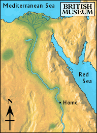

Lake

The boy walked for many days through the desert. He rested when he could not go any further. Finally, he saw palm trees and a pool of water in the distance.
He reached the lake and rested in the shade under a tree. He spent two days resting by the lake.
The boy asked the local people if they had seen a group pass through the area heading for the mines. But no one had passed through for a long time.
Should he keep going towards the mines, or back through the desert towards the Nile?